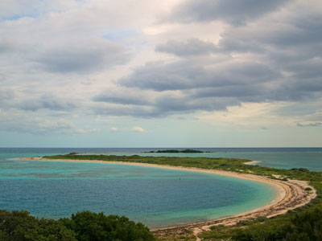
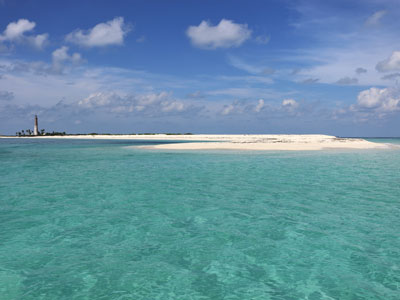
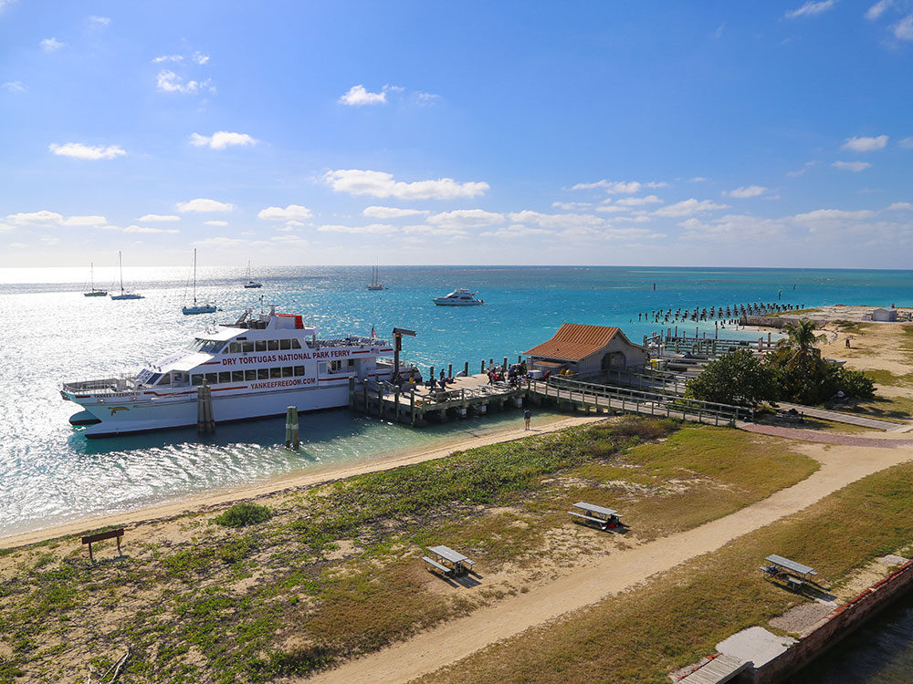
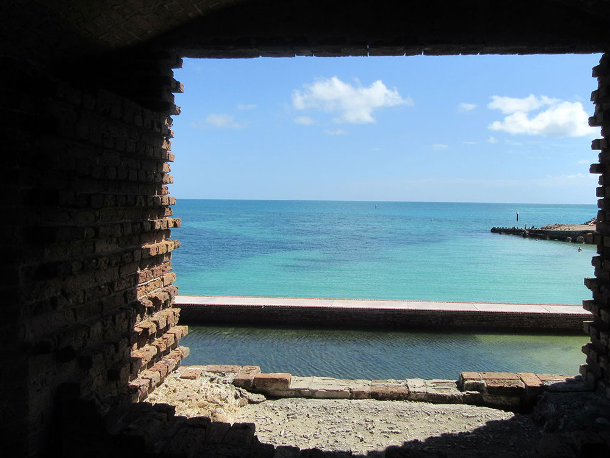
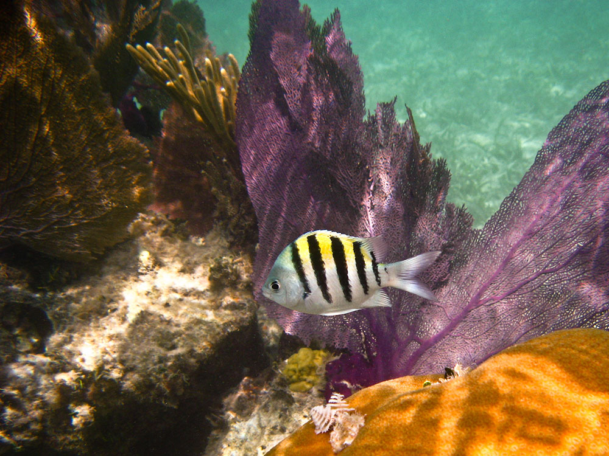
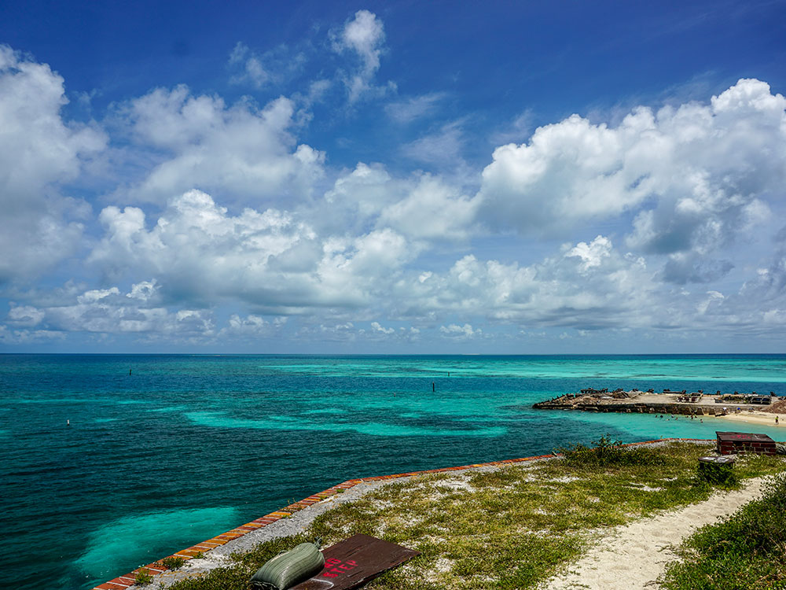
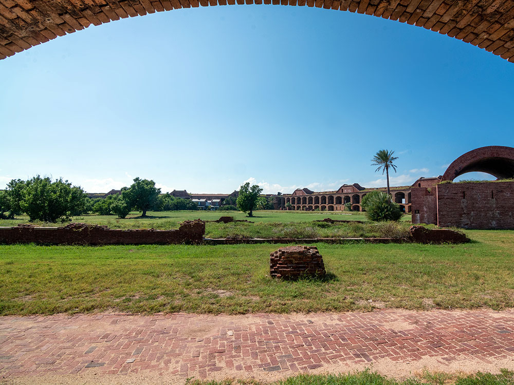
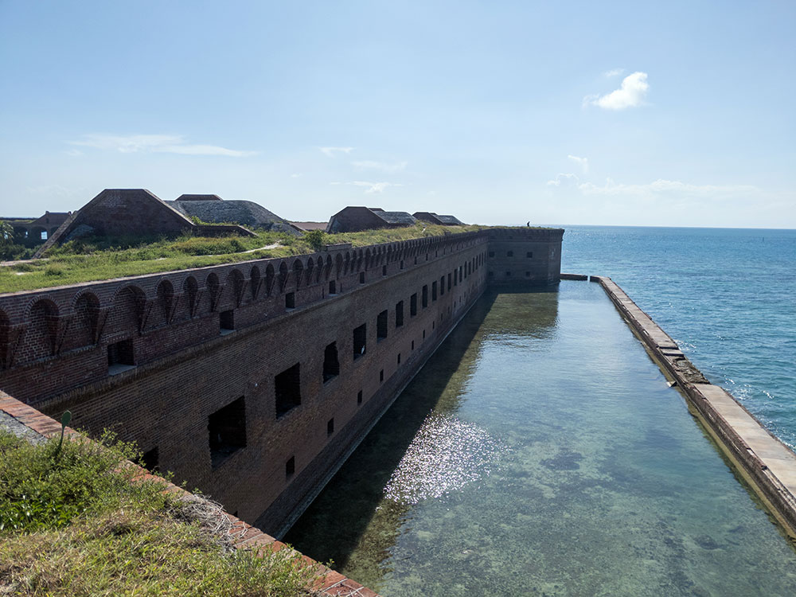

National park about 68 miles west of Key West in the Gulf of Mexico, preserving Fort Jefferson and the Dry Tortugas islands, the westernmost and most isolated of the Florida Keys
General Information
Children age 15 and under: Free
America the Beautiful Passes accepted
Transportation fees by ferry or seaplane are separate and additional
How to Get There
From Key West (70 mi): Travel to the Yankee Freedom III Ferry Terminal at 100 Grinnell Street in Key West or board a seaplane from Key West International Airport, then cross approximately 70 miles west over the Gulf of Mexico to reach Garden Key and Fort Jefferson within Dry Tortugas National Park.
Overview
Dry Tortugas National Park is a remote national park about 70 miles west of Key West, made up of seven small coral islands, the westernmost of the Florida Keys, and more than 99 percent open water. Its centerpiece is Fort Jefferson, the largest brick masonry structure in the Western Hemisphere, built of more than 16 million bricks and never finished. The park is also known for its clear turquoise water, coral reefs, snorkeling, tropical bird colonies, and shipwrecks. Ponce de León named the islands "Tortugas" (turtles) in 1513, and "Dry" refers to the lack of fresh water.
Fort Jefferson was begun in 1847 to guard the Gulf of Mexico, later served as a prison, and held Dr. Samuel Mudd, the doctor who treated John Wilkes Booth, until his pardon in 1869. The site was protected as Fort Jefferson National Monument in 1935 and became a national park in 1992. People visit to tour the fort, swim and snorkel in the clear water, see thousands of nesting seabirds, and enjoy the solitude of an island far from the mainland. The park can be reached only by ferry, seaplane, or private boat.
Park Sections
The park's seven islands lie in a group. Garden Key is the main island, with Fort Jefferson, the dock, the visitor center, and the primitive campground. Bush Key, next to it, is a major nesting area for sooty terns and is closed to visitors during nesting season, usually from about February to September. Loggerhead Key, 3 miles west, has a lighthouse and good snorkeling, but is reached only by private boat. The other islands are small and mostly closed. Most visitors spend the day on Garden Key.
Sightseeing and Exploring the Park
Sightseeing is centered on Fort Jefferson. Visitors can walk through the fort's arched corridors and rooms, climb to the top of the walls for views of the sea, and walk along the moat wall that circles the fort. A ranger-led or self-guided tour explains the fort's history, including the prison and the Civil War. The Garden Key lighthouse, the coaling dock ruins, and the beaches are also worth seeing. Sunsets over the Gulf are a highlight for campers. A seaplane flight offers an aerial view of the islands, the fort, and the colorful reef.
Hiking
The islands are small, and there are no hiking trails in the usual sense. The main walk is around the fort's moat wall, about half a mile, which offers views of the water, birds, and the fort. Garden Key has a short beach walk, and the sand and coral paths on the island are flat and easy. Loggerhead Key has a longer shoreline walk for those who arrive by private boat. There is little shade, so bring sun protection, a hat, and water, and wear shoes on the coral rock and beaches.
Other Activities
The park is known for snorkeling, which is excellent off the beach at Garden Key and along the moat wall, where visitors see colorful fish, sea turtles, and coral. Scuba diving, fishing (with a Florida license), kayaking, and birdwatching are also popular. Most visitors take the Yankee Freedom ferry from Key West, which includes breakfast, lunch, snorkel gear, and a fort tour; see the sections below. Seaplane trips from Key West are shorter and more expensive. Camping on Garden Key and boating in the park are other options.
Flora and Wildlife
Dry Tortugas is a top spot for birds and marine life. Bush Key hosts the only nesting colony of sooty terns in the contiguous United States, with tens of thousands of birds in spring and summer, as well as brown noddies, magnificent frigatebirds, and masked boobies. April is a prime month for bird migration, and rare migrants often land on the islands. Underwater, the reefs are home to colorful fish, goliath groupers, and green, loggerhead, and hawksbill sea turtles. Plants are limited to salt-tolerant species such as sea grape and buttonwood. Viewing is on your own, and snorkeling is the best way to see the reef.
Access
Dry Tortugas can be reached only by sea or air. The Yankee Freedom ferry leaves from Key West and takes about 2 hours and 15 minutes each way for a full-day trip, and reservations are strongly recommended. Key West Seaplane Adventures flies visitors in about 40 minutes, with half-day and full-day trips. Private boats can also reach the park, but navigation is difficult and boaters need a good chart. Key West is about 160 miles (3.5 to 4 hours) south of Miami, and Key West International Airport has flights from several cities. Drivers must plan for a long trip.
Seasons
The park is open all year, but the best time to visit is from late winter through spring, when the weather is mild, the seas are often calm, and migrating birds are at their peak in April. Winter cold fronts can bring wind and rough crossings. Summer is hot and humid with strong sun, but the water is warm and clear, and the sooty tern colony is active. Hurricane season runs from June to November, and the ferry may be cancelled in bad weather. Bush Key is closed during seabird nesting season, usually from February to September.
Camping and Lodging
The park has a primitive campground on Garden Key with about eight sites, a first-come, first-served campground with no fresh water, no electricity, and no food, so campers must bring everything and carry it out. Campers arrive by ferry or private boat, and the ferry company carries camping gear for a fee. There is no lodging in the park. Key West, 70 miles away, has a wide range of hotels, guesthouses, and resorts, such as the historic Casa Marina and the Marquesa Hotel, and visitors usually stay there before and after their trip.
Visitor Centers
The park's visitor center is at Fort Jefferson on Garden Key, where rangers provide information, exhibits, and tours for ferry passengers and campers. Ranger-led fort tours are offered daily after the ferry arrives. On the mainland, information and trip planning are available from the park's Key West office and the Yankee Freedom ferry terminal on Grinnell Street. Hours depend on the ferry and seaplane schedules, so check the National Park Service website.
Visiting by Ferry
A ferry excursion to Dry Tortugas National Park and Fort Jefferson is one of the most popular ways to visit this remote national park located approximately 70 miles west of Key West, Florida. The journey is operated by the Yankee Freedom, an authorized National Park Service concessionaire, aboard a high-speed catamaran that transports visitors across the Gulf of Mexico to Garden Key, home of the historic Fort Jefferson.
The full-day excursion combines transportation, sightseeing, history, and outdoor recreation in a single experience. Upon arrival, visitors can explore Fort Jefferson, one of the largest masonry forts ever built in the Americas, relax on white-sand beaches, swim in crystal-clear waters, snorkel among coral reefs and tropical fish, enjoy birdwatching, or simply take in the scenery of one of America's most remote national parks. The ferry ride itself offers opportunities to observe marine life and enjoy panoramic ocean views.
What's Included
- Round-trip ferry transportation between Key West and Dry Tortugas National Park
- National Park entrance fee
- Access to Fort Jefferson
- Complimentary snorkeling equipment
- Narrated fort tour
- Time for swimming, snorkeling, beach walking, and sightseeing
- Comfortable indoor and outdoor seating areas aboard the ferry
Pricing
| Excursion Type | Starting Price |
|---|---|
| Dry Tortugas Day Trip Ferry | $245 per person |
| Dry Tortugas Camping Ferry Package | $265 per person |
The standard day-trip ferry excursion starts at approximately $245 per person and includes ferry transportation and park admission. Camping packages begin at approximately $265 per person and include transportation for visitors staying overnight at the island campground. Additional fees may apply for campsite reservations and optional activities.
This article uses material from the Wikipedia article "Dry Tortugas National Park" and the Yankee Freedom Dry Tortugas Ferry ticketing and pricing pages, released under the Creative Commons Attribution-Share-Alike License 3.0. Additional information comes from the National Park Service Dry Tortugas National Park website.
Featured Locations

Daniel Kraft, CC BY-SA 3.0, via Wikimedia Commons; Image Size Adjusted

Bush Key
A remote undeveloped island featuring pristine beaches, nesting seabirds, shallow turquoise waters, and a scenic shoreline trail within one of America's most isolated national parks.

NPS Natural Resources, Public domain, via Wikimedia Commons; Image Size Adjusted
.jpg){kind=link}
Loggerhead Key
A remote island featuring a historic lighthouse, pristine beaches, coral reef ecosystems, abundant marine life, and some of the clearest waters in the Gulf of Mexico.





.jpg){kind=link}




